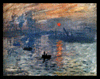
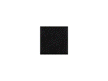

INFO (AT) FABIENNEHESS.COM
INSTAGRAM: FABIENNE_HESS
I am interested in things which are difficult to see, forgotten, marginalized. This can be the extent of the collections of the University of Edinburgh; deleted digital images or the individual threads of a tightly woven silk cloth. With my work I try to see them for myself and render them visible to the world. This usually involves grouping images according to visual similarity, slippery materials, undoing an existing order. And it is often a laborious manual process where I spend a long time repeating a small gesture. Like scrolling through thousands of images, drawing words on fragile plastic or undoing silk into threads.
EDUCATION
2012
Master of Arts, Royal College of Art, London
2004
Diploma in graphic design, Vocational College
for Art & Design, Zürich
SOLO EXHIBITIONS
2016
Hits and Misses (from the archive), Talbot Rice Gallery, Edinburgh
I Need, Trust Me, Help Me, La Balsa Arte, Bogotá, Colombia
2014
Excerpts from the Bastard Series, XVIIX.com, online
Replica Sentiments, French Riviera , London
SELECTED GROUP EXHIBITIONS
2017
Between Poles and Tides Talbot Rice Gallery, Edinburgh
2016
Alienamientos , La Balsa Arte, Bogotá, Colombia
Replica Sentiments , French Riviera, London
SCREENINGS
2016
Hits and Misses (from the archive) Talbot Rice Gallery, Edinburgh
I Need, Trust Me, Help Me , La Balsa Arte , Bogota, Columbia
2014
Excerpts from the Bastard Series, XVIIX.com , online
Replica Sentiments , French Riviera, London
PUBLICATIONS / REVIEWS
2016
Hits and Misses (from the archive) Talbot Rice Gallery, Edinburgh
I Need, Trust Me, Help Me , La Balsa Arte , Bogota, Columbia
2014
Excerpts from the Bastard Series, XVIIX.com , online
Replica Sentiments , French Riviera, London

RESIDENCIES
2016
Hits and Misses (from the archive) Talbot Rice Gallery, Edinburgh
I Need, Trust Me, Help Me , La Balsa Arte , Bogota, Columbia
2014
Excerpts from the Bastard Series, XVIIX.com , online
Replica Sentiments , French Riviera, London

COMMISSIONS
2016
Hits and Misses (from the archive) Talbot Rice Gallery, Edinburgh
I Need, Trust Me, Help Me , La Balsa Arte , Bogota, Columbia
2014
Excerpts from the Bastard Series, XVIIX.com , online
Replica Sentiments , French Riviera, London